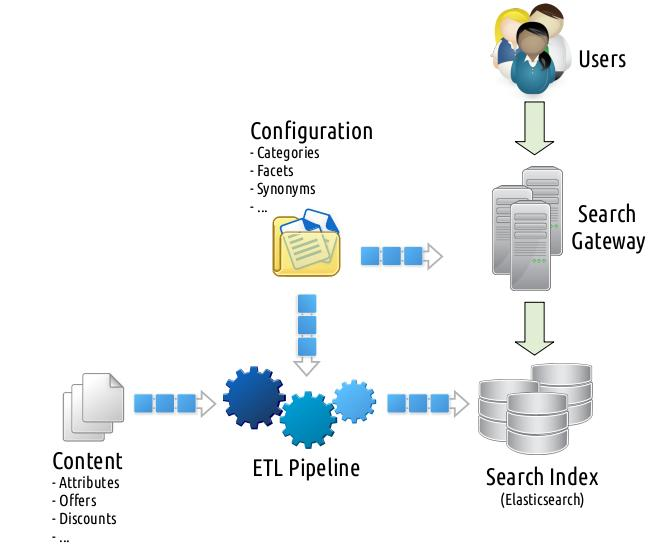
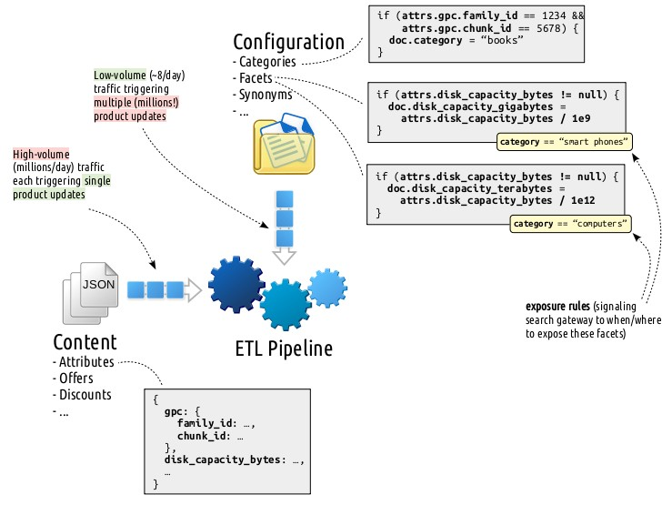
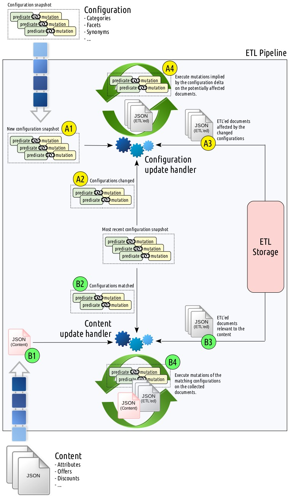
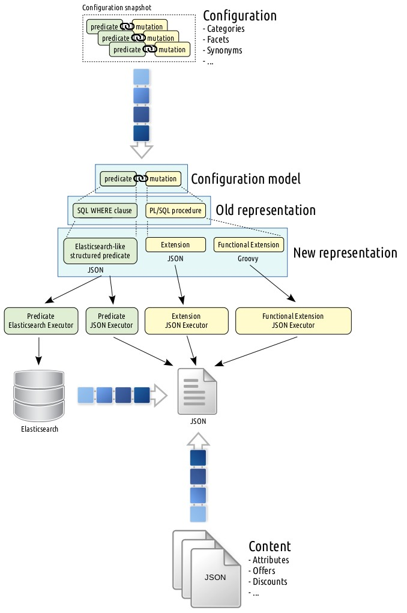

The biggest e-commerce company in the Netherlands and Belgium, bol.com, set out on a 4 year journey to rethink and rebuild their entire ETL (Extract, Transform, Load) pipeline, that has been cooking up the data used by its search engine since the dawn of time. This more than a decade old white-bearded giant, breathing in the dungeons of shady Oracle PL/SQL hacks, was in a state of decay, causing ever increasing hiccups on production. A rewrite was inevitable. After drafting many blueprints, we went for a Java service backed by Elasticsearch as the primary storage! This idea brought shivers to even the most senior Elasticsearch consultants hired, so to ease your mind I’ll walk you through why we took such a radical approach and how we managed to escape our legacy.
Before diving into the details, let me share a 2,000ft overview of an e-commerce search setup that will help you to gain a better understanding of the subjects discussed onwards. Note that this simplification totally omits a nebula of incorporated caching layers, systems orchestrating multiple search clusters, queues with custom flush and replay functionalities, in-place resiliency mechanisms, services maintaining deprecated search entities to avoid getting ranked down by bots due to 404s, circuit breakers, throttlers, load balancers, etc. But it is still accurate enough to convey the general idea.

[Before going any further, I want to take this opportunity to align you on what exactly I do mean by search. I hope this will help you to better wrap your mind around the ultimate consumer of ETL. That being said, feel free to skip this section and directly jump to the ETL deep dive in the next section.]
Many people tend to make the mistake of having a narrow view on search at e-commerce and confining its use case to a mere term scavenging in a mountainous stack of product attributes. While this statement holds to a certain extent, it resembles a cherry located at the tip of an iceberg. (In Varnishing Search Performance presentation, I tried to summarize how difficult it can get just to add a caching layer between your search logic and backend.) There are books written, university lectures offered, and computer science branches dedicated on the matter. But let me try to briefly elaborate this from an engineering standpoint.
If I would try to give a general, but far from complete, overview, it enables one to
search for a term in hundreds of product attributes, where matching and ranking are curated with directly or indirectly available consumer (are you a PS4 owner searching for the newest “Call of Duty”?) and relevance (you probably meant a band by typing “The Doors”, which is irrelevant for “Doors & Windows” department) contexts,
browse (basically a search without a term) in thousands of categories with similar ranking mechanics used in search aforementioned,
beam up directly to a certain product or category given the input matches with certain patterns (EAN, ISBN, ISSN, etc.) or merchandising rules (any syntactic and/or semantic combination of “wine glasses” should end the flow in a particular department, etc.),
implicitly trigger multiple searches under the hood (e.g. narrowing down to a lower category or widening up to a higher category, etc.) to enhance the results,
and decorate every listing with faceting (you probably want to see “Capacity” facet rather than “Shoe Size” while searching/browsing in “Harddisks”) support.
This is a big debate. But I know a handful of certain consumers:
Customers: People who search and buy goods. They look harmless, until one gets exposed to them on a Black Friday where they work hand to hand in masses to DDoS the entire infrastructure.
Bots: They periodically (a couple of times a day at most, as of the date of this writing) try to digest your entire catalog into their system for two main purposes:
The worst part of handling bot traffic is you cannot always throttle them (for instance, Google takes into account website latencies for rankings) and you need to make sure they do not harm the customer traffic. Food for thought: Imagine your customers swarming at your shop at Christmas Eve and Google decided to spider your entire catalog with thousands of requests per second.
Partners: Your business partners can also scan your catalog periodically to integrate into their own systems. (Fun fact: Some even require a daily Excel export.) One can classify them as bots only interested in a subset of the data.
Internal services: Last time I counted, there were 20+ internal services using search to enhance their results in addition to the users I listed above. Their usage can constitute up to 50% of the traffic.
In the case of partners and internal services, one might argue why do they need the search data rather than directly accessing the raw product attributes and offers. The answer is simple: They also use additional attributes (e.g., facets, categories) incorporated at the ETL pipeline. Hence, rather than exposing the internal ETL system to them, it is more convenient to manage them at the search gateway which is known to have battle-tested scalability and resiliency measures.
As decades-long experience in this domain points, making search 10ms faster can yield millions of euros extra revenue depending on the scale of your business. Unfortunately, this equation works the other way around as well. Hence, you are always expected to perform under a certain latency and above a certain throughput threshold.
Very, very, very volatile! I cannot emphasize this enough and I believe this is a crucial difference that puts e-commerce search apart from Google-like search engines – recall the conflict between Google and Twitter for indexing tweets. Maybe examples can help to convey the idea better:
A product might have multiple offers (bol.com offer, partner offer, etc.) featuring varying properties (pricing, deliverability, discounts, etc.) where both offers and/or their properties are highly volatile. The offer might run out of stock, the price might change, etc. While customer-facing web pages are enhanced with the most recent data at runtime, search index might lag behind and provide an eventually consistent view. The volatility in this context might range from seconds to months. On prime time, e.g. on Valentine’s Day, you don’t want your search engine to return gift listings that ran out of stock a couple of seconds ago.
Your manual (triggered by shop specialists) and automated (artificial intelligence, machine learning driven) processes can alter the category tree, add new facets, tune the exposure of existing facets, modify the search behavior (e.g., flows triggered by merchandising rules), add context sensitive (e.g. category-dependent) thesaurus entries, synonyms, introduce new rankings, etc. These changes might necessitate the update of millions of documents retroactively.
This volatility debate will take a prominent role while deciding on the architecture of the next ETL pipeline, which I will elaborate in a minute.
In the domain of search at e-commerce, ETL denotes the pipeline where the input is a multitude of information sources (product attributes, offers, discounts, rankings, facets, synonyms, thesaurus entries, etc.) and the output is the denormalized input constituting search-ready documents optimized for search query performance. Wait a second? If an ETL pipeline just delivers some optimization purposes, doesn’t this sound like that one can have a search without it? Sorta… That is indeed possible to a certain extent. If we would put the details aside for a moment, we can roughly compare the two approaches as follows:
| Strategy | Advantages | Disadvantages |
|---|---|---|
| Without ETL | Every change in the input sources take immediate effect. (Hence, almost zero index time cost.) | Latency and throughput hurts dramatically due to necessitated join and enrich operations on input sources at query time. |
| With ETL | Since all potential data to satisfy search requests has already been baked into the index, search necessitates the least amount of effort to satisfy a request at query time. | Every change in the input sources will necessitate pre-processing affecting a multitude of products ranging from a couple to millions. |
Put another way, ETL is all about the trade-off between index- versus query-time performance. In the light of all these and given
we took the thick ETL pipeline path.
But what is this ETL pipeline really? What does it literally do? In order to answer these questions, let me focus your attention to the input sources going into the ETL pipeline:

[GPC stands for Global Product Classification, which is de facto commercial categorization of goods varying from a car to a litre of milk.]
These two input sources, content and configuration, feature two totally different execution patterns framing the functional requirements of the potential ETL solutions, hence, play the uttermost critical role in justifying the plan we picked. Let’s examine them further:
Here the ETL pipeline listens from more than a dozen queues for updates
ranging from product attributes to offers, offer-specific discounts to
rankings, etc. all formatted in JSON. Fortunately, each
real-time content stream message triggers a single product update. Let me
exemplify this with a case: when disk_capacity_bytes attribute of a product
changes, we
disk_capacity_bytes attribute,There are some concerns need to be addressed here:
This is a pretty CPU intensive operation. Configurations, in essence, are
rules in the form of (predicate, mutation) pairs defined via
business-friendly screens by shop specialists. When an attribute of a
document gets updated, this change might be of interest to many
configurations which are determined by performing an inverse lookup on tens
of thousands of configuration predicates (e.g., attrs.disk_capacity_bytes !=
null) matching with the last state of the document. Later on mutations
(e.g., doc.disk_capacity_gigabytes = attrs.disk_capacity_bytes / 1e9) of
the found configurations are executed to let them shape the document
according to their needs.
This innocent looking procedure sneakily introduces two critical issues under the hood:
And it goes without saying, both concerns aforementioned need to be engineered efficiently. You are expected to repeat this procedure on each message JSON of the real-time content stream where the traffic is in the order of millions per day.
As a concrete configuration example consider the following: You have two
“Disk Capacity” facets defined by business: one for computers, one for
smart phones departments. The first one translates the
disk_capacity_bytes into a disk_capacity_terabytes attribute which is
defined to be exposed when category == "computers" and the second
translates into a disk_capacity_gigabytes attribute which is defined to
be exposed when category == "smart phones". Here both configurations are
executed when the attrs.disk_capacity_bytes != null predicate holds.
This operation needs to be performed atomically. Two concurrent operations touching to the same product should not result in a corrupt content.
Configurations are the rules defined via business-friendly screens. There modifications done by shop specialists are published in snapshots when they think the changes grow into a stable state that they are ready to be exposed to the customer. Each published configuration snapshot ends up serving three purposes:
While the first two are relatively cheap operations, the last one is the elephant in the room! This is the first time in our beautiful tale described so far that we need to propagate a change to millions of documents. Let me further explain this in an example:
Let’s consider that the following category definition:
if (attrs.gpc.family_id == 1234 && attrs.gpc.chunk_id == 5678) {
doc.category = "books"
}is modified as follows:
if (attrs.gpc.family_id == 1234 && attrs.gpc.chunk_id == 0xDEADBEEF) {
doc.category = "AWESOME BOOKS"
}Sir, you are in trouble! As the very ETL pipeline, what you are expected to deliver is to
books from the category field,AWESOME BOOKS to the category field.This easier said than done operation contains many implicit concerns:
ETL needs to avoid removing books from the category field if there are
rules, other than the changed one, adding books to the very same category
field. There are two ways you can approach to this:
With every value added to a field, store a meta information pointing to the rules associated with that value. These back-tracking pointers optimize the check whether a value can be removed or not, with the cost of maintaining them in an ocean of values.
After removing every value, put the product back into the ETL pipeline
just like handling products in the real-time content stream. If there are
any rules, other than the changed one, adding books to the very same
category field, they will kick in. This simple approach comes with the
cost of a CPU intensive and unfortunately mostly redundant processing.
Given that configuration predicates are allowed to access any field, how would one represent a predicate and translate this into an ETL storage query filter that performs well? (You would not want to scan the whole data set for each predicate that is changed, right? Well… depends.)
Let’s first discuss the representation of predicates issue, which was also a
concern in the real-time content stream processing. Here you might first
fall into the trap of whitelisting the operators (==, !=, >, >=,
<, <=, ~=) and the content attributes (attrs.gpc.family_id,
attrs.gpc.chunk_id, attrs.disk_capacity_bytes, etc.) that are allowed in
configuration predicates. While whitelisting operators is fine, whitelisting
the content attributes implies that the ETL pipeline, the configuration
administration GUIs, etc. all needs to have the knowledge of this whitelist
which strictly depends on the structure of the real-time content stream
message structures. Whenever the message structures change or you want to
add a new attribute to this whitelist, both happen a couple of times every
year, you need to propagate this to many components in your service milky
way and perform a deploy without downtime.
What about translating these predicate representations into efficient ETL storage query filters? Let’s take the simplest approach: Represent each attribute with a separate field. Then let me ask you the following questions:
If you would opt for using an RDBMS, you can represent attributes by columns and create an index for each individual column. (Ouch!) Thanks to the half-century battle-tested RDBMS literature, the database can easily optimize and perform an index scan for the constructed queries:
SELECT ...
FROM content
WHERE attrs_gpc_family_id = '1234'
AND attrs_gpc_chunk_id = '5678'That being said… What if you hit to the maximum column count limitation? (Yes, we did!) Further, what about attributes that are list of objects:
{
"authors": [
{
"fname": "Volkan",
"lname": "Yazici"
},
{
"fname": "Lourens",
"lname": "Heijs"
}
]
}You definitely cannot store these in a single column and still query each individual component. Ok, then you can normalize the data as follows:
SELECT ...
FROM content,
attribute AS a1,
attribute AS a2
WHERE a1.content_id = content.id AND a1.name = 'gpc_family_id' AND a1.value = '1234'
AND a2.content_id = content.id AND a2.name = 'gpc_chunk_id' AND a2.value = '5678'So far so good. But… In a matter of months, you will need to start partitioning tables and maybe even move certain partitions into separate database instances to maintain the latency under a certain threshold. (Yes, we did this as well!) But this never-ending database structure optimization more and more feels like you are inventing your own distributed database using a plain RDBMS. Does this really still need to be this way in 2018?
If you would opt for using MongoDB, like using
an RDBMS, you still need create an explicit index on each (whitelisted)
field. For filters involving multiple fields (e.g., attrs.gpc.family_id
== 1234 && attrs.gpc.chunk_id == 5678), MongoDB query optimizer can
purpose individual field indices via index intersection.
That being said, our experience with this feature has not been very
pleasant.
The issue where attributes might contain list of objects is not a problem for MongoDB.
If you would opt for Google Cloud Datastore, you will need to create explicit indices for each potential filter combination and order matters! Yes, you read that right! Let me exemplify this bizarre situation. If you have configurations with the following predicates:
attrs.gpc.family_id == 1234attrs.gpc.chunk_id == 5678attrs.gpc.family_id == 1234 && attrs.gpc.chunk_id == 5678attrs.gpc.chunk_id == 5678 && attrs.gpc.family_id == 1234you need to define 4 different indices! Ouch! This in its own was a Datastore show stopper for us.
If you would opt for Elasticsearch,
all fields are indexed by default and you can use them in any combination!
Yay! No need for whitelisting! And similar to MongoDB, Elasticsearch also
allows querying list of objects,
you just need to declare them explicitly as nested. If you don’t even
want to worry about that, you can add a dynamic mapping template to make
each object nested by default. Following is the index mapping you can use
for that purpose:
{
"date_detection": false,
"dynamic_templates": [
{
"strings": {
"match_mapping_type": "string",
"mapping": {
"type": "keyword"
}
}
},
{
"objects": {
"match_mapping_type": "object",
"mapping": {
"type": "nested"
}
}
}
]
}Above mapping also disables analyzing the fields of type string, since
we are not interested in performing fuzzy queries. Clearly, date detection
is disabled for similar reasons.
These being said, Elasticsearch is known to suffer from deteriorating query performance over time when exposed to high update rates.
So far we examined the current ETL setup with concrete examples for several cases. We broke down the system into its individual input sources and detailed their implications on certain architectural decisions. Let’s wrap up this mind-boggling details into operational abstractions:

Given these operational abstractions, let me summarize the constraints the configuration components (predicate and mutation) imply.
If you would recall, configuration mutations were simple document enhancement instructions that I exemplified as follows:
doc.category = "books"Here doc is a dictionary denoting the ETL’ed document source and mutation
“adds” books value to its category field. This (for simplification
purposes, JavaScript-employed) innocent looking expression can (and does!) go
to unintended extents:
if (attrs.suitable_for_month <= 2) {
doc.childhood_stage = "newborn";
} else if (attrs.suitable_for_month <= 12) {
doc.childhood_stage = "infant";
} else if (attrs.suitable_for_month <= 48) {
doc.childhood_stage = "toddler";
}The choice of the mutation DSL employed is expected to deliver the following requirements:
The reason that the latter functionality marked as optional is that the ETL pipeline can also retrieve these documents in raw from the storage, convert them to JSON, execute mutations, and persist them back again – assuming data integrity is provided by other means, e.g., transactions, retries powered by compare-and-swap operations, etc.
Configuration predicates were simple conditions restricted to use a
whitelisted set of operators (==, !=, >, >=, <, <=, ~=)
supporting grouping:
attrs.gpc.family_id == 1234 && attrs.gpc.chunk_id == 5678Similar to mutations, the choice of the predicate DSL used is expected to deliver the following requirements:
We relaxed the latter constraint since one can very well prefer to put the entire stored document collection (Ouch!) back into the ETL pipeline, process them, detect the changed ones, and persist the updates. This approach has certain assumptions though:
Given you still need to make a back of the envelope calculation on your cloud bill for each approach, our years of statistics in the ETL snapshot configuration point that most of the time snapshot deltas affect at most 5% of the entire collection and the average is less than 1% – thanks to the incremental updates carried out by shop specialists. Hence, performing a complete ETL a couple of times a day feels like overkill and hurts the engineer within you.
The old ETL was a single Oracle database where the configurations were modeled in PL/SQL. Since the configuration abstraction language was the very same language the database uses itself, executing mutations and predicates was effortless. Hail SQL injection as a feature! Though this came with some notable costs:
In its previous incarnation, the content attributes were stored in <id,
content_id, key, value> normalized form. This approach started to suffer from
efficiency aches in the hinges pulling the ETL’ed data to the search index.
Back then hired Oracle consultants examined the usage and recommended to go
with a denormalized structure where each attribute is stored as a column. In
addition to temporarily bandaging up the efficiency related wounds, this
allowed DBAs to let their imaginations go wild to map the attributes to
columns. Recall the attributes composed of objects I mentioned above? Special
characters were used to create such multi-value attributes, which was pretty
much (to put it mildly) unpleasant. But the killer bullet came in the form of
a six-inch punch referred as the maximum allowed column count
limit. But isn’t engineering
all about how hard you can get it and keep moving
forward? Yes, comrade! We thought so and used a
single binary XML column to store attributes, queried them using Oracle XPath
toolbox, escaped attribute values, finally concatenated them into SQL strings
that are eventually executed, and for sure crossed our fingers.
There are a couple of important details that I could not manage to cover in the above war diary without spoiling the coherency. Let me drop them here in no particular order:
Enough blaming the former engineer. We need to get our facts right. The aforementioned PL/SQL giant was not rolled out in a day with a big bang. This more than a decade old ETL pipeline was developed with all the best practices and tooling available back then. The more you dive into its source code, navigate through commits of features spanning through years, it becomes easier to see what went wrong and where. Now you are able to realize the patterns that necessitated exceptional handling of certain features, of which many due to backward-compatibility with legacy systems that have already been deprecated or replaced by newcomers, exploded the complexity to unintended depths. Software development is never-ending progress and axioms you base your initial architecture on become invalidated in the course of time due to changing business needs. Aiming for infinite flexibility comes with an engineering cost as well, which might very well fall short of justifying such an expense. One should also include the massive burst of data volume and its update frequency into this list. I personally think the old ETL pipeline and its engineers did a fantastic job. The tool served its purpose for more than a decade and harvested an immense amount of lessons for its successor. I would be more than happy if we as a team can also achieve to deliver such a long living product.
Given our functional requirements, we evaluated a couple of different ETL pipeline storage solutions which I hinted to earlier. Following is the feature matrix of each candidate:
| Storage Solution | Distributed | Sharded | Required Indices | Integrity Measure |
|---|---|---|---|---|
| PostgreSQL | No | No | One1 | Transactions |
| PostgreSQL (partitioned) | No | Yes2 | One1 | Transactions |
| MongoDB | Yes | Yes3 | Some4 | Compare-and-swap5 |
| Elasticsearch | Yes | Yes | None | Compare-and-swap6 |
1 PostgreSQL jsonb index covers all fields.
2 PostgreSQL partitioning is not sharding in distributed sense, but still serves a similar purpose.
3 MongoDB sharding requires manual configuration.
4 MongoDB requires an explicit index for each whitelisted field allowed in ETL configuration predicates.
5 MongoDB updateMany() or findAndModify() can be leveraged for the desired integrity.
6 Elasticsearch _version field can be leveraged to implement a compare-and-swap loop.
For the benchmark, we populated each store with 33 million JSON documents of
which each weighs an average size of 2.5KB. One of the contrived fields in the
document is search_rank. Later on, a file consisting of 6 million distinct
<id, search_rank> pairs is streamed in batches of size 1000. For each batch,
we first fetch the old search_ranks associated with the ids and then bulk
update these with the new search_ranks. In this scenario, what we tried to
emulate is a bulk update triggered by a configuration snapshot delta, which
is the most storage performance demanding operation in the ETL pipeline.
Used test bed is a cluster composed of 6 dedicated machines with the following specifications:
We further configured each store as follows:
PostgreSQL: Just one PostgreSQL 9.6.10 instance containing a single
<id, content> table where content is of type jsonb.
Benchmark configured to update only the search_rank attribute of the
content column.
PostgreSQL (partitioned): Same as above, but the content table is
partitioned into 10 tables.
MongoDB: MongoDB 3.6 with the following configurations:
systemLog.destination: file
systemLog.logAppend: true
processManagement.fork: true
storage.engine: wiredTiger
security.authorization: enabled
replication.oplogSizeMB: 9216Note that sharding is not enabled. (More on this later.)
Similar to PostgreSQL setup, benchmark configured to update only the
search_rank attribute of documents.
Elasticsearch: Elasticsearch 6.3.0 with the following JVM flags:
-Xms30g
-Xmx30g
-Xss256k
-XX:NewRatio=3
-XX:+UseParNewGC
-XX:+UseConcMarkSweepGC
-XX:CMSInitiatingOccupancyFraction=75
-XX:+UseCMSInitiatingOccupancyOnly
-XX:+PrintGCDetails
-XX:+PrintGCDateStamps
-XX:+PrintClassHistogram
-XX:+PrintTenuringDistribution
-XX:+PrintGCApplicationStoppedTime
Here JVM heap size is set to 30G due to compressed OOPs limitation.
Different from PostgreSQL and MongoDB setups, where only the search_rank
attribute is updated, Elasticsearch benchmark is configured to update the
entire document. While this overkill is subject to hammer Elasticsearch way
heavier (since Elasticsearch will create quite some garbage segments waiting
to be merged and making every object nested worsens the case even more) than
other stores, it is more strategically aligned with how we want to use it in
the future.
Below you will see the results of the benchmark for only MongoDB and Elasticsearch. The reason PostgreSQL results were omitted is no matter what kind of optimization we throw at it, the benchmark always took more than 2 hours, regardless of partitioning, whereas MongoDB and Elasticsearch took a couple of minutes.
| Store | Conc.7 | Latency | Total (s) | Fetch8 75% (ms) | Fetch8 99% (ms) | Fetch8 Max. (ms) | Update9 75% (ms) | Update9 99% (ms) | Update9 Max. (ms) |
|---|---|---|---|---|---|---|---|---|---|
| MongoDB | 8 | total | 518 | 68 | 999 | 3380 | 64 | 2347 | 4153 |
| per batch | 8 | 125 | 423 | 8 | 293 | 519 | |||
| 16 | total | 526 | 71 | 3082 | 7905 | 68 | 5564 | 7955 | |
| per batch | 4 | 193 | 494 | 4 | 348 | 497 | |||
| 32 | total | 518 | 61 | 6668 | 11465 | 98 | 10533 | 13784 | |
| per batch | 2 | 208 | 358 | 3 | 329 | 431 | |||
| Elasticsearch | 8 | total | 251 | 278 | 423 | 798 | 94 | 186 | 412 |
| per batch | 35 | 53 | 100 | 12 | 23 | 52 | |||
| 16 | total | 196 | 478 | 697 | 1004 | 141 | 266 | 410 | |
| per batch | 30 | 44 | 63 | 9 | 17 | 26 | |||
| 32 | total | 175 | 951 | 1368 | 1515 | 214 | 331 | 828 | |
| per batch | 30 | 43 | 47 | 7 | 10 | 26 | |||
7 Number of concurrent batches.
8 Time it takes to fetch a batch.
9 Time it takes to update a batch.
Let me share some observations from the results:
Increasing concurrency improves Elasticsearch performance (up to 32 concurrent batches) but does not have much effect on MongoDB.
Elasticsearch rocked in performance even though it is hammered with the update of the entire document whereas MongoDB is just trying to update a single attribute. Using 32 concurrent batches, it took 175s and 518s for Elasticsearch and MongoDB, respectively, to complete the benchmark.
Elasticsearch yielded way more predictable performance figures compared to MongoDB. Note the difference between 75- and 99-percentile figures.
Elasticsearch segment merges were unexpectedly pretty stable during
the runs, whereas we were anticipating it to become the bottleneck due to
high update rate. But compare-and-swap loops played over _version fields
allowed for the necessary data integrity without breaking a sweat.
At the time of testing, we initially were not able to enable sharding in MongoDB due to operational obstacles on our side. Though Elasticsearch results were such promising, to the point of even shocking the hired Elasticsearch consultants, we decided to go with it, of which we have years of production experience. If we would put the necessity of whitelisted configuration predicate fields problem aside – that is, required explicit indices on what can be queried – MongoDB could very well be a viable option as well.
But, really, why Elasticsearch has a reputation of not being recommended as a primary data store? I think it all started when the official project website years ago contained an explicit statement admitting that Elasticsearch is not intended to be used as a primary data store. Once, as the very owner of the project itself, you admit this fact, it is really difficult to convince people the other way around – even if the situation might have been improved. Later on, published Jepsen (an effort to improve the safety of distributed databases, queues, consensus systems, etc.) reports (one in 2014-06-15 using Elasticsearch 1.1.0 and the other one in 2015-04-27 using Elasticsearch 1.5.0) worsened the situation and this bad reputation disseminated over the web in the speed of light. While this tornado DDoS’ing the entire Hackernews, Proggit, etc. blogosphere with endless discussions in the form of “See? I told ya so!”, Elasticsearch team put up a Elasticsearch Resiliency Status page. There they started sharing (even up to today!) known resiliency problems, including the ones found in Jepsen reports, converting them into reproducable cases in GitHub issues, and tackling them one at a time. What else would qualify as a professional commitment if not this one? Again, these were all back in early 2015. Our Elasticsearch production deployments successfully managed to return with a victory from every battle front thrown at them. It did not always feel like a walk in the park. We had our hard times, though managed to overcome those and noted down the experience to the book of lessons learnt. Let me share some common practices from that collection:
_version
field.Is Elasticsearch the perfect tool for the job at hand? Not really. But it is the one closest to that. We also know how to deal with each other – just like in any other relationship.
By taking into account the ETL pipeline concerns detailed in previous chapters, we derived a list of basic foundations that we aim to deliver:
Let me elaborate on how we addressed these deliverables.
The previous benchmark section already detailed the rationale behind employing
Elasticsearch as the primary storage. It is distributed and sharded by
default. It doesn’t require explicit indices on a whitelist of allowed
configuration predicate fields – every field is allowed to be queried by
default. It has no problems with querying fields containing a list of objects.
It provides sufficient leverage for data integrity via compare-and-swap loops
over _version fields. It is very efficient on bulk fetches and updates,
which was totally unexpected for us. Last, but not least, it is our bread and
butter in search and we have plenty of experience with it.
In the case of configuration DSL, we wanted to stop the plague of PL/SQL leakage all around the code base. For this purpose, we decided to go with the model depicted below.

Here we replaced SQL WHERE clauses, which were used to represent configuration predicates in the old ETL pipeline, with JSON describing the structure of the predicate. This new predicate representation resembling the Elasticsearch filters is translated to individual executors matching against either JSON (coming from the real-time content stream) or the storage engine, that is, Elasticsearch. Note that the way we used to represent the predicate is independent of medium (JSON, Elasticsearch, etc.) it is executed against such that we even implemented a MongoDB adapter at some point. An example configuration predicate JSON is show below:
{
"type": "nested",
"path": ["content", "attribute"],
"filter": {
"type": "and",
"filters": [
{
"type": "nested",
"path": ["gpc"],
"filter": {
"type": "and",
"filters": [
{
"type": "equals",
"path": ["family_id"],
"value": "1234"
},
{
"type": "equals",
"path": ["chunk_id"],
"value": "5678"
}
]
}
},
{
"type": "nested",
"path": ["authors"],
"filter": {
"type": "and",
"filters": [
{
"type": "equals",
"path": ["fname"],
"value": "Volkan"
},
{
"type": "equals",
"path": ["lname"],
"value": "Yazici"
}
]
}
}
]
}
}As depicted above, we split the configuration mutation model into two abstractions: extension and functional extension. An extension is the simplest form of mutation that generally applies to more than 90% of the available configurations. It is basically a JSON object that is upon execution expected to be merged into the original source. A simple example is as follows:
{
"category": "books"
}Functional extensions are built to address complex configuration mutations. There we employed Groovy after experimenting with some other candidates, e.g., JavaScript (Nashorn, which is planned to be dropped), Python (Jython), Ruby (JRuby), etc. The main drivers for us to pick Groovy are as follows:
java.util.Map)
without any intermediate translations, hence has no problems processing
thousands of mutations on a single core.That being said, the decision of Groovy creates a JVM vendor lock-in for the ETL pipeline, though we do not anticipate this to be a problem for at least the coming decade.
A sample functional extension is given below.
static Map<String, Object> extend(Map<String, Object> source) {
def diskCapacityBytes = (long) source.get("disk_capacity_bytes")
def diskCapacityGigabytes = diskCapacityBytes / 1e9
source.put("disk_capacity_gigabytes", diskCapacityGigabytes)
return source
}Implementing an e-commerce search engine is a tough business. The part of the iceberg under the water level – that is, the ETL pipeline – is not less than that. In this post, I tried to share the lessons we piled up in the implementation and maintenance of our decade-old ETL pipeline and how we cultivated these to come up with something new. I attempted to explain how the choice for the configuration DSL and the used primary storage engine has the uttermost implication on the rest of the components of the architecture. Elasticsearch has already been serving us pretty well in the search gateway. Taking a step further and employing it in the ETL was a substantially unconventional idea that gave the shivers to every engineer involved in the decision. But the careful consideration and evaluation of potential candidates paid off: It worked! So when you visit bol.com next time, you will know that the Elasticsearch in the ETL pipeline – in addition to many other Elasticsearch using services involved – cooked that warm page for you seconds ago.
I would like thank to Berkay Buharalı, Lourens Heijs, William Leese, Almer S. Tigelaar, Leon Widdershoven, and Maurice Zeijen for their valuable feedback in bringing the post to its final form.
Here I will try to answer certain questions I received via Hackernews or e-mail.
bol.com has plenty of databases supported by an army of skilled DBAs. During benchmarks, we collaborated with our PostgreSQL experts to continuosly tune the necessary knobs to get the best performance given our data size and access patterns. Hence, it wasn’t a tune once, run once operation, but rather a continuous effort to determine an optimal configuration.
search_rank?For the benchmark purposes, we employed a deprecated signal (that is,
search_rank) that we used to score the matched documents. In the new search
gateway, that approach is replaced with a multitude of context-dependent
signals combined at runtime. The answer to how does the computation of ranking
signals work is out of the scope of this post. But in a nutshell, it is an
in-house machine learning algorithm harvesting historical user interaction log.
Handling of sudden or seasonal trends? That is a whole different game.
Yes. I managed to squeeze the entire content into a 50 minutes long talk and had to opportunity to share it with people in